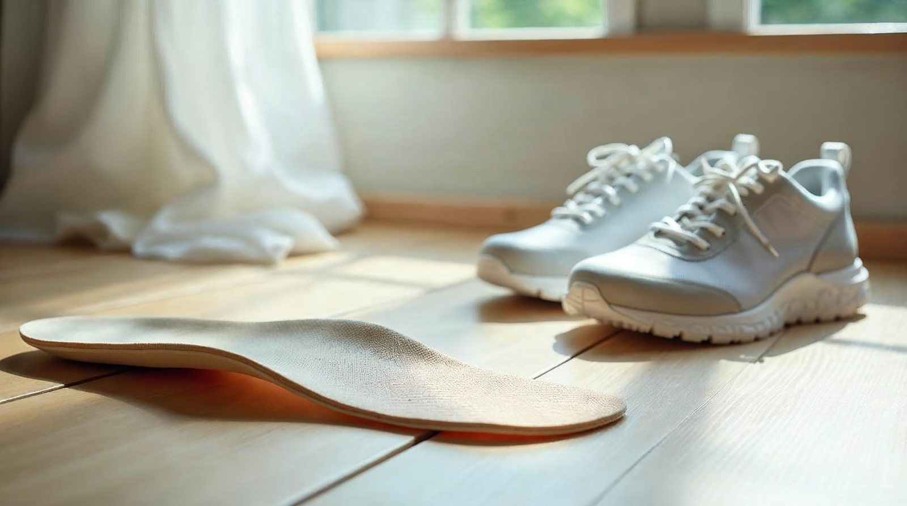
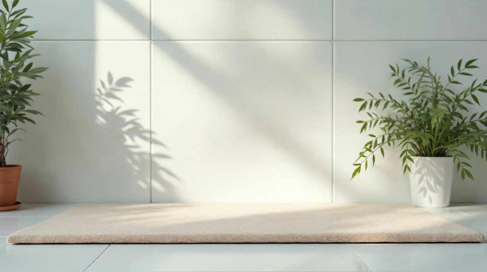
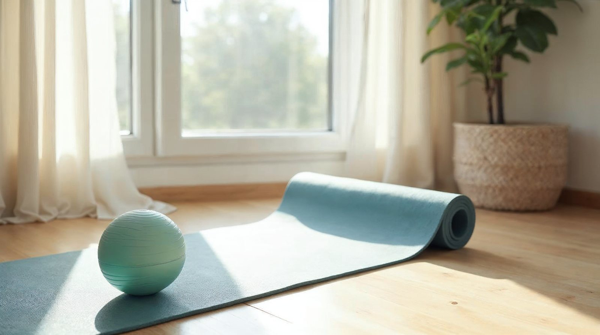
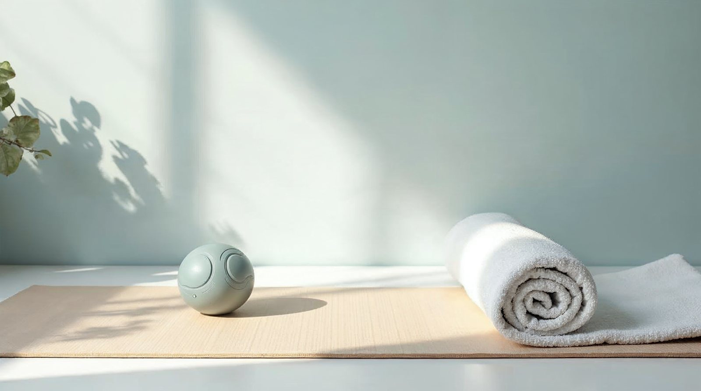
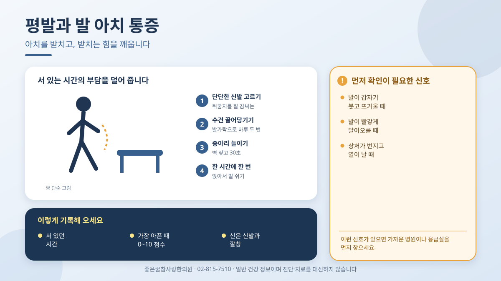

이종호 한의사 감수좋은꿈참사랑한의원 대표원장 (한의사 면허번호 19769)발행 2026-11-26 · 수정 2026-11-26
이 글의 차례
하루 종일 매장에 서서 일하고 집에 돌아오면, 발바닥 안쪽 오목한 자리가 묵직하게 쑤십니다. 신발을 벗으면 발이 넓게 퍼진 것 같고, 안쪽 복사뼈 아래까지 뻐근합니다. 원래 평발이라 그런가 보다 하고 넘기다가, 요즘 들어 무릎과 허리까지 피곤하다며 진료실에 오시는 분이 많습니다.
발바닥 안쪽에는 아치라고 부르는 오목한 둥근 지붕이 있습니다. 이 아치가 낮거나 서 있을 때 납작하게 내려앉는 발을 흔히 평발이라고 합니다. 평발이라고 다 아픈 것은 아니고, 평생 불편 없이 지내는 분도 많습니다.
문제는 아치를 받치는 힘줄과 근육, 발바닥의 질긴 막이 지쳐서 아치가 점점 더 내려앉고 통증이 생기는 경우입니다. 특히 어릴 때는 괜찮던 발이 어른이 되어 조금씩 무너지는 경우에는 그 이유를 살펴볼 필요가 있습니다.
오늘은 평발에도 종류가 있다는 것, 아치가 왜 무너지는지, 발바닥 통증과 함께 무릎과 허리까지 어떻게 이어지는지, 생활에서 무엇을 해 볼 수 있는지를 차근차근 말씀드리겠습니다.
발 아치는 어떤 일을 하나요
발에는 뼈가 스물여섯 개 있고, 이 뼈들이 인대와 힘줄로 엮여 둥근 지붕 모양의 아치를 이룹니다. 발바닥 안쪽 오목한 자리가 우리가 흔히 말하는 아치이고, 발 앞쪽을 가로지르는 작은 아치도 있습니다.
아치는 걸을 때 용수철처럼 눌렸다가 다시 펴지면서 땅에서 올라오는 충격을 흡수합니다. 발을 내디딜 때는 살짝 낮아져 땅에 맞춰 퍼지고, 발을 차고 나갈 때는 다시 단단해져 몸을 앞으로 밀어 줍니다.
이 아치를 받치는 것이 발바닥의 질긴 막, 발바닥 작은 근육들, 그리고 종아리 안쪽에서 내려와 안쪽 복사뼈 뒤를 지나 발바닥으로 들어가는 힘줄입니다. 이 셋이 함께 지치면 아치가 버티지 못하고 내려앉습니다.

평발에도 종류가 있습니다
앉아 있거나 까치발을 들면 아치가 다시 생기고, 서 있을 때만 내려앉는 발을 유연한 평발이라고 합니다. 어린이와 어른 모두에게 흔하고, 대부분은 불편이 없거나 적습니다.
까치발을 들어도 아치가 생기지 않고 발이 뻣뻣한 경우는 굳은 평발이라고 부릅니다. 뼈의 모양이나 뼈끼리 붙은 문제가 숨어 있을 수 있어, 이런 경우에는 정형외과 검사를 함께 받아 보시도록 안내드립니다.
어릴 때는 정상이던 아치가 어른이 되어 한쪽만 서서히 무너지는 경우도 있습니다. 안쪽 복사뼈 아래가 붓고 아프면서 아치가 낮아지고, 한 발로 까치발을 들기가 점점 어려워진다면 아치를 받치는 힘줄이 지쳐 있는 신호일 수 있습니다.
왜 발 아치가 무너지고 아플까요
가장 흔한 이유는 오래 서 있거나 많이 걷는 생활입니다. 하루 종일 딱딱한 바닥에 서서 일하면 아치를 받치는 힘줄과 근육이 쉬지 못하고, 저녁이 될수록 아치가 조금씩 내려앉으며 통증이 커집니다.
체중이 늘어나는 것도 아치에 부담을 줍니다. 몸무게가 늘면 한 걸음마다 아치가 받아 내야 할 무게가 커지고, 같은 생활을 해도 힘줄이 더 빨리 지칩니다. 임신 중이나 출산 뒤에 발이 넓어졌다고 느끼시는 분도 많습니다.
종아리 근육이 짧게 굳어 있는 것도 이유가 됩니다. 종아리가 당겨져 발목이 충분히 젖혀지지 않으면, 걸을 때 발이 안쪽으로 무너지며 그 움직임을 대신합니다. 오래 앉아 지내거나 굽 높은 신발을 자주 신는 분에게서 흔합니다.
밑창이 얇고 바닥이 무른 신발, 오래 신어 안쪽이 닳은 신발, 발에 맞지 않는 신발도 아치를 지치게 합니다. 그래서 진료실에서는 발 하나보다 서 있는 시간과 체중, 종아리, 신발을 함께 여쭙습니다.
발바닥 통증, 무릎과 허리로도 이어질 수 있습니다
아치가 내려앉으면 발이 안쪽으로 구르면서 정강이뼈가 안쪽으로 돌고, 무릎도 안쪽으로 모이기 쉽습니다. 그래서 평발이 있는 분 가운데 무릎 안쪽이나 무릎뼈 주변이 시큰하다는 분이 적지 않습니다.
발이 바닥에서 받아 주지 못한 충격은 위로 올라갑니다. 골반이 한쪽으로 기울고 허리가 뻐근해지는 분도 계십니다. 물론 모든 무릎과 허리 통증이 발에서 오는 것은 아니지만, 발부터 함께 보면 실마리가 보이는 경우가 있습니다.
다른 발바닥 통증과는 어떻게 다른가요
아침 첫발을 디딜 때 발뒤꿈치 안쪽이 찌르듯 아프고 몇 걸음 걸으면 나아진다면 족저근막염을 함께 생각합니다. 평발과 함께 오는 경우도 많지만, 아치 전체가 묵직한 것과는 아픈 자리가 조금 다릅니다.
안쪽 복사뼈 아래가 저리고 발바닥이 화끈거리며 감각이 둔하다면 발목 터널 증후군을, 발가락 사이가 찌릿하면 발 앞쪽 신경 문제를 생각합니다. 아픈 자리와 통증의 성격을 나누어 보는 것이 첫걸음입니다.
집에서 해 볼 수 있는 간단한 확인
맨발로 서서 거울에 발을 비춰 보세요. 발바닥 안쪽 오목한 자리에 손가락이 들어갈 틈이 있는지 봅니다. 그다음 까치발을 들어 아치가 다시 생기는지 확인합니다. 생긴다면 유연한 평발일 가능성이 큽니다.
발을 물에 적셔 신문지 위에 디뎌 보는 것도 방법입니다. 발자국 안쪽이 오목하게 비어 있는지, 발바닥 전체가 넓게 찍히는지를 양쪽으로 비교해 봅니다.
양쪽 발자국 모양이 다르다면 아픈 쪽이 어느 쪽인지와 함께 기억해 두세요.
벽을 잡고 한 발로 까치발을 열 번 들어 보세요. 한쪽만 유난히 힘들거나 안쪽 복사뼈 아래가 아프다면 그 쪽 힘줄이 지쳐 있을 수 있으니 진료실에서 말씀해 주세요.
신발은 어떻게 고르면 좋을까요
신발을 고를 때는 뒤꿈치를 감싸는 부분이 단단한지 먼저 눌러 보세요. 손가락으로 눌렀을 때 쉽게 찌그러지면 발뒤꿈치가 안쪽으로 기우는 것을 붙잡아 주지 못합니다. 밑창은 가운데를 잡고 비틀었을 때 너무 쉽게 돌아가지 않는 것이 좋습니다.
신발 앞쪽은 발가락이 편하게 움직일 만큼 여유가 있어야 합니다. 앞이 좁은 신발은 발가락을 모아 발 앞쪽 아치까지 지치게 합니다. 발은 저녁에 조금 붓기 때문에, 신발은 오후나 저녁에 신어 보고 고르시면 실패가 적습니다.
굽이 아주 낮은 납작한 신발도, 굽이 높은 신발도 아치에는 부담이 됩니다. 뒤꿈치가 앞보다 살짝 높은 정도가 편한 분이 많고, 일하는 곳에서 신는 신발과 출퇴근 신발을 번갈아 신으면 발이 한 가지 모양에 지치는 것을 줄일 수 있습니다.

서서 일하는 분들을 위한 작은 요령
계산대나 작업대 앞에 오래 서 있다면, 바닥에 쿠션 매트를 깔 수 있는지 살펴보세요. 딱딱한 바닥 위에 그대로 서 있는 것보다 발바닥이 받는 충격이 줄어듭니다.
한 자세로 오래 서 있기보다 체중을 양발에 번갈아 옮기고, 낮은 받침에 한 발씩 번갈아 올려 두는 것도 좋습니다. 틈이 날 때마다 발뒤꿈치를 몇 번 들었다 내리면 종아리 근육이 펌프처럼 움직여 다리의 묵직함도 덜해집니다.
퇴근 뒤에는 발을 미지근한 물에 담그거나 공 위에 올려 굴리며 발바닥을 풀어 주세요. 그날 쌓인 피로를 그날 풀어 주면 다음 날 아침 첫발이 한결 가벼울 수 있습니다.

운동은 어떻게 하면 좋을까요
아치가 아픈 동안에는 오래 걷기나 달리기처럼 발바닥에 같은 충격이 반복되는 운동을 조금 줄이고, 수영이나 실내 자전거처럼 체중이 덜 실리는 운동으로 체력을 이어 가시길 권합니다.
걷기를 다시 늘릴 때는 평지에서, 짧은 시간부터 시작합니다. 걸은 다음 날 아침 발바닥이 평소보다 더 묵직하지 않다면 조금씩 늘려 보세요. 언덕과 계단, 울퉁불퉁한 산길은 가장 나중에 더합니다.
발 운동과 종아리 늘이기는 통증이 가라앉은 뒤에도 이어 가시는 것이 좋습니다. 아치를 받치는 근육은 쓰지 않으면 금세 다시 약해지기 때문에, 양치나 텔레비전 시청처럼 매일 하는 일에 붙여 두면 오래 이어 가기 쉽습니다.
먼저 이렇게 여쭙니다
처음 오시면 저는 대략 이런 순서로 여쭙니다. 미리 떠올려 오시면 이야기가 훨씬 빨라집니다.
- 하루에 서 있거나 걷는 시간은 어느 정도인가요?
- 발바닥 어디가, 하루 중 언제 가장 아픈가요?
- 어릴 때부터 평발이었나요, 최근에 발이 넓어진 느낌이 드나요?
- 한쪽만 아픈가요, 양쪽이 비슷한가요?
- 무릎, 골반, 허리에 함께 불편한 곳이 있나요?
- 주로 신는 신발과 깔창은 어떤 것인가요?
자주 신는 신발을 신고 오시면 밑창 닳은 모양을 함께 볼 수 있습니다. 안쪽이 유난히 닳았다면 발이 안쪽으로 무너지며 걷고 있다는 단서가 됩니다.
일상에서 먼저 해 볼 수 있는 것
아치가 지쳐 있을 때는 아치를 받쳐 주고, 아치를 받치는 근육을 깨우는 두 가지를 함께 하는 것이 요령입니다.
- 바닥이 단단하고 뒤꿈치를 잘 감싸는 신발 고르기
- 오래 서 있는 날은 한 시간에 한 번 앉아 발 쉬게 하기
- 앉아서 발가락으로 수건을 끌어당기는 운동 하루 두 번
- 발가락은 펴고 발바닥 안쪽만 살짝 들어 올리는 운동
- 벽을 짚고 종아리를 30초씩 늘이기
- 저녁에 발바닥을 공 위에 올려 부드럽게 굴리기
발바닥 안쪽만 들어 올리는 운동은 처음엔 잘 안 되는 분이 많습니다. 앉은 자세에서 발가락을 바닥에 붙인 채 발 앞쪽을 뒤꿈치 쪽으로 살짝 당기듯 하면 아치가 볼록 솟는 느낌이 납니다. 5초 버티고 쉬기를 열 번 해 보세요.
깔창은 아치를 받쳐 서 있는 시간 동안 힘줄의 부담을 덜어 주는 데 도움이 될 수 있습니다. 다만 너무 높게 받치는 깔창은 오히려 발바닥을 누르니, 처음에는 짧은 시간부터 신어 보며 편한 높이를 찾아 주세요.
맨발로 집 안을 오래 걷는 것은 아치가 지쳐 있을 때 부담이 될 수 있습니다. 아픈 시기에는 바닥이 단단한 실내화를 신어 보시고, 통증이 가라앉으면 맨발 운동을 조금씩 늘려 갑니다.
한의원에서 함께 살필 수 있는 경우
- 오래 서 있는 날 저녁마다 발바닥 안쪽과 아치가 묵직하게 아픈 경우
- 안쪽 복사뼈 아래가 뻐근하고 발이 쉽게 피곤한 경우
- 평발이 있으면서 무릎 안쪽이나 허리가 함께 불편한 경우
- 종아리가 늘 굳어 있고 발목 움직임이 뻑뻑한 경우
- 발바닥 통증으로 걷기 운동을 이어 가기 어려운 경우
좋은꿈참사랑한의원에서는 모든 분의 맥을 먼저 짚으며 하루의 생활과 불편한 때를 여쭙습니다. 그다음 서 있는 모습과 걸음, 아픈 자리, 종아리와 발바닥 근육의 긴장, 무릎과 골반의 정렬을 함께 봅니다.
진찰한 내용을 바탕으로 발과 종아리 주변의 긴장을 줄이는 침, 온열 관리, 걸음과 골반의 균형을 살피는 추나 가운데 지금 상태에 맞는 것을 고릅니다. 발바닥 막이 오래 예민하게 남아 있다면 체외충격파 상담을 함께 드리기도 합니다. 무엇을 할지는 진찰 뒤에 정합니다.
드시는 약이 있다면 그대로 이어 가시고 임의로 멈추지 않도록 안내합니다. 한약을 상의할 때는 드시는 약을 먼저 확인하고 신중히 정합니다. 임신 중이시라면 진료 전에 먼저 알려 주시고, 산부인과와도 상의해 주세요.
이렇게 기록해 오시면 상담이 쉬워집니다
발바닥 통증은 하루의 생활과 나란히 움직입니다. 일주일 정도만 간단히 적어 오시면 무엇이 아치를 지치게 하는지 보이기 시작합니다.
- 서 있거나 걸은 시간, 걸음 수
- 하루 중 가장 아팠던 때와 그 정도(0~10)
- 신은 신발과 깔창
- 발 운동과 종아리 늘이기를 한 날 표시
기록을 나란히 놓으면 오래 서 있던 날, 특정 신발을 신은 날과 통증이 겹치는지가 보입니다. 그것이 다음에 무엇을 바꿀지 정하는 실마리가 됩니다.

내 발과 오래 잘 지내려면
평발은 고쳐야 할 결함이라기보다, 조금 더 보살핌이 필요한 발의 모양에 가깝습니다. 아치를 받쳐 주는 신발과 아치를 깨우는 운동을 함께 챙기는 것이 발바닥의 묵직함을 덜어 가는 출발점이 될 수 있습니다.
발은 하루 종일 몸 전체를 떠받치는 곳이라, 발이 편해지면 무릎과 허리, 기분까지 함께 가벼워질 수 있습니다.
이번 주에는 수건 끌어당기기 운동과 종아리 늘이기, 이 두 가지만 먼저 해 보세요. 다음에 오시면 일주일 기록과 신발 밑창을 함께 보며 다음 걸음을 정하겠습니다.
이런 증상은 먼저 확인이 필요합니다
- 발이 갑자기 붓거나, 빨갛고 뜨겁게 달아오르는 경우
- 발에 생긴 상처가 빨갛게 번지거나, 고름이 나거나, 열이 함께 나는 경우
이런 신호가 있으면 한의원보다 가까운 병원이나 응급실을 먼저 찾으세요.
함께 읽으면 좋은 글
- 동네 공원 걷기를 새로 시작했는데 발바닥이 아플 때는 어떻게 살피나요?
- 아침 첫발이 아픈 발바닥 통증은 초음파로 어떻게 확인하나요?
- 발바닥 통증은 어떤 종류가 있고 어떻게 구분해서 살피나요?
- 족저근막염 통증에 체외충격파는 어떻게 사용하나요?
- 전신 체형 검사와 족저 검사는 무엇을 살피나요?

여쭙는 것
- 하루에 서 있거나 걷는 시간은 어느 정도인가요?
- 발바닥 어디가, 하루 중 언제 가장 아픈가요?
- 어릴 때부터 평발이었나요, 최근에 발이 넓어진 느낌이 드나요?
생활에서 해 볼 것
- 바닥이 단단하고 뒤꿈치를 잘 감싸는 신발 고르기
- 오래 서 있는 날은 한 시간에 한 번 앉아 발 쉬게 하기
- 앉아서 발가락으로 수건을 끌어당기는 운동 하루 두 번
한의원에서 함께 살필 것
- 오래 서 있는 날 저녁마다 발바닥 안쪽과 아치가 묵직하게 아픈 경우
- 안쪽 복사뼈 아래가 뻐근하고 발이 쉽게 피곤한 경우
- 평발이 있으면서 무릎 안쪽이나 허리가 함께 불편한 경우
먼저 확인이 필요한 신호
- 발이 갑자기 붓거나, 빨갛고 뜨겁게 달아오르는 경우
- 발에 생긴 상처가 빨갛게 번지거나, 고름이 나거나, 열이 함께 나는 경우
한눈에 보는 표
| 구분 | 핵심 |
|---|---|
| 여쭙는 것 | 하루에 서 있거나 걷는 시간은 어느 정도인가요? 발바닥 어디가, 하루 중 언제 가장 아픈가요? |
| 생활에서 해 볼 것 | 바닥이 단단하고 뒤꿈치를 잘 감싸는 신발 고르기 오래 서 있는 날은 한 시간에 한 번 앉아 발 쉬게 하기 |
| 한의원에서 함께 살필 것 | 오래 서 있는 날 저녁마다 발바닥 안쪽과 아치가 묵직하게 아픈 경우 안쪽 복사뼈 아래가 뻐근하고 발이 쉽게 피곤한 경우 |
| 먼저 확인이 필요한 신호 | 발이 갑자기 붓거나, 빨갛고 뜨겁게 달아오르는 경우 발에 생긴 상처가 빨갛게 번지거나, 고름이 나거나, 열이 함께 나는 경우 |
자주 묻는 질문
평발이면 꼭 깔창을 써야 하나요?
불편이 없는 평발이라면 꼭 쓸 필요는 없습니다. 오래 서 있을 때 아치가 아프다면 깔창이 부담을 덜어 주는 데 도움이 될 수 있어, 짧은 시간부터 신어 보며 편한 높이를 찾아보시길 권합니다.
어른이 되어서도 아치가 다시 생길 수 있나요?
뼈의 모양을 바꾸기는 어렵지만, 아치를 받치는 근육을 기르는 것이 서 있을 때 아치가 덜 내려앉고 덜 지치도록 돕는 데 보탬이 될 수 있습니다. 변화의 정도는 사람마다 다릅니다.
맨발 걷기가 평발에 좋은가요?
통증이 없을 때는 발 근육을 깨우는 데 도움이 될 수 있지만, 아치가 아픈 시기에는 부담이 될 수 있습니다. 통증이 가라앉은 뒤 짧게 시작해 조금씩 늘려 보세요.
아이가 평발인 것 같은데 괜찮을까요?
어린아이는 아치가 자라면서 생기는 경우가 많아 지켜보는 경우가 대부분입니다. 아이가 자주 아프다고 하거나 발이 뻣뻣하다면 소아청소년과나 정형외과에서 먼저 확인해 보세요.
좋은꿈참사랑한의원은 재진 때 지난번 이야기부터 이어서 여쭙니다. 진료시간과 예약은 오시는 길에서 확인하세요.
어디서 상담받을 수 있나요?
좋은꿈참사랑한의원은 서울 동작구 만양로2길 2 신성빌딩 3층·5층(서울 동작구 상도동, 7호선 상도역 3번 출구 근처)에 있습니다. 한의사 3명(이종호 대표원장, 조영기 수석진료원장, 정원영 진료원장)이 진료합니다. 진료시간은 평일 09:30~20:00(점심 13:00~14:00), 토·일·공휴일 09:30~15:00이며, 방문 전 전화로 확인을 권합니다. 예약은 네이버 예약, 카카오톡 상담, 전화 02-815-7510로 받습니다.
이 글은 일반적인 건강 정보이며 개인의 진단이나 치료를 대신하지 않습니다. 증상이 있거나 복용 중인 약이 있다면 진료를 통해 확인하세요. 치료 효과는 개인마다 다를 수 있습니다.
작성 기준: 일반적으로 알려져 있는 건강 정보를 참고해 정리했습니다(대표원장 감수). 증상 기록은 1~2주 동안 하루 1회, 비슷한 시간에 적어 오시면 지난 상태와 비교하기 쉽습니다.